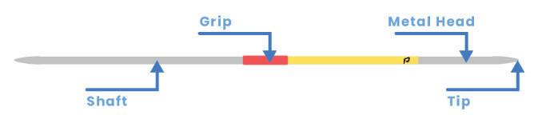

Javelin
The javelin is a spear-shaped object constructed from metal, fibreglass, carbon fibre, or wood. Its total length and weight range from 2.2 m to 2.7 m and 500 g to 800 g, respectively, depending on the gender and age of the athletes. As illustrated in Figure 2.2, the primary parts of the javelin include the shaft, metal tip, and grip.

Activity 2.1
Go through internet and other relevant sources to identify length and weight of javelin according to age and sex of the athlete.
Fundamental skills for javelin throw
Throwing a javelin requires a combination of technical, physical, and mental skills, including gripping and throwing.
Gripping
Gripping refers to the holding of a javelin during the throw. The grip is crucial because it affects the control, stability, and power transferred to the javelin during the throw. A proper grip ensures that the javelin is released smoothly and with the right amount of force and angle for maximum distance. There are various gripping types including: American grip, Finnish grip and V-grip.
American grip
This is a gripping technique in which the index finger is placed on top at the edge of the cord, and the thumb beneath. The middle and ring fingers support the javelin, Figure 2.3. The javelin is held above the shoulder, ready for a sharp, whipping motion as it is thrown. This grip allows for a more controlled release, often used to add spin or additional distance through wrist rotation.